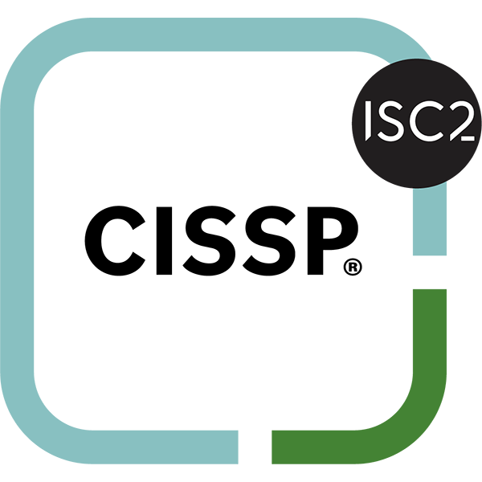

Defend Your Business
Against The Unknown
Petr Pospíšil
//
Fractional CISO & Security Architect
I bridge the gap between Technical Risk and
Business Reality - ensuring you pay for protection, not
paranoia.

Petr Pospíšil
Fractional CISO & Architect
Engineering Trust & Expertise
My Path to Mastery
Penetration Tester
Started as a Red Teamer. I learned exactly how attackers think and exploit vulnerabilities.
Threat Hunter
Shifted to Blue Team. Proactively hunting for threats I used to emulate.
InfoSec Manager
Managed security for a Global Retail Enterprise. Focused on Threat Intel & Strategy.
Security Architect & Fractional CISO
Independent Consultant. Combining technical depth with strategic business vision.
Trusted by Institutions


Verified Expertise



Why work with me?
Strategic Clarity, Not Just Tech
I don't just fix bugs; I align security with your business goals. My background as an InfoSec Manager means I understand budgets, timelines, and the need for operational continuity.
Full-Spectrum Expertise
Having worked as both an attacker (Red Team) and defender (Blue Team), I offer a rare, complete perspective. I know how they break in, so I know exactly how to keep them out.
Human-Centric Security
Security fails when people don't understand it. My experience training for OSCE and UNDP proves I can translate complex threats into clear, actionable habits for your staff.
Stop treating Security as "just IT support"
The regulatory landscape has shifted. Your business is facing three critical risks that threaten your bottom line.
Regulatory Hammers
NIS2 and the Cyber Resilience Act are here. Non-compliance means massive fines and personal liability for executives. Are your documents ready for an audit tomorrow?
Ransomware Reality
It’s not "if", it’s "when". One click by an employee can encrypt your data. Downtime costs thousands per hour, plus the secondary damage of GDPR fines and lost client trust.
The Skills Vacuum
Your IT team manages infrastructure, not defense. They lack specialized security skills. Without a dedicated Security Architect, you are building your business on a shaky foundation.
Replace Uncertainty with Control
I offer two distinct modes of engagement: ongoing strategic leadership or specialized technical interventions.
01 // Strategic Leadership
Fractional CISO & Architect for SMEs
SMEs face a critical capacity problem: you need the technical depth of a Security Analyst, the structural vision of an Architect, and the governance of a CISO—but you cannot afford three separate salaries.
I am the solution to that impossibility. I fit all these positions into one expert engagement. I handle your technical hardening, compliance (NIS2), and board-level strategy simultaneously.
- ✓ Governance & Technical Hardening in One
- ✓ NIS2 Compliance for SMEs
- ✓ Eliminates Need for Multiple Hires
- ✓ Board-Ready Risk Communication
02 // Technical Architecture & Projects
Vulnerability & PenTesting
- ✓ Web & App Penetration Testing
- ✓ Infrastructure Audits
- ✓ Cloud Configuration Review